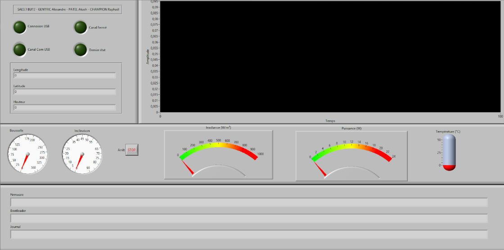
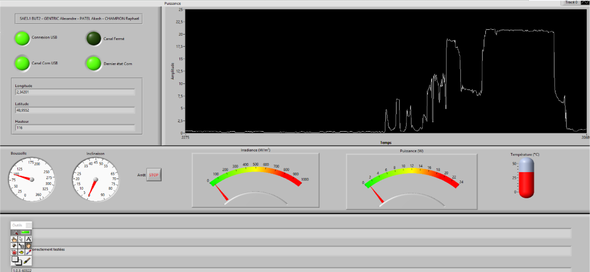
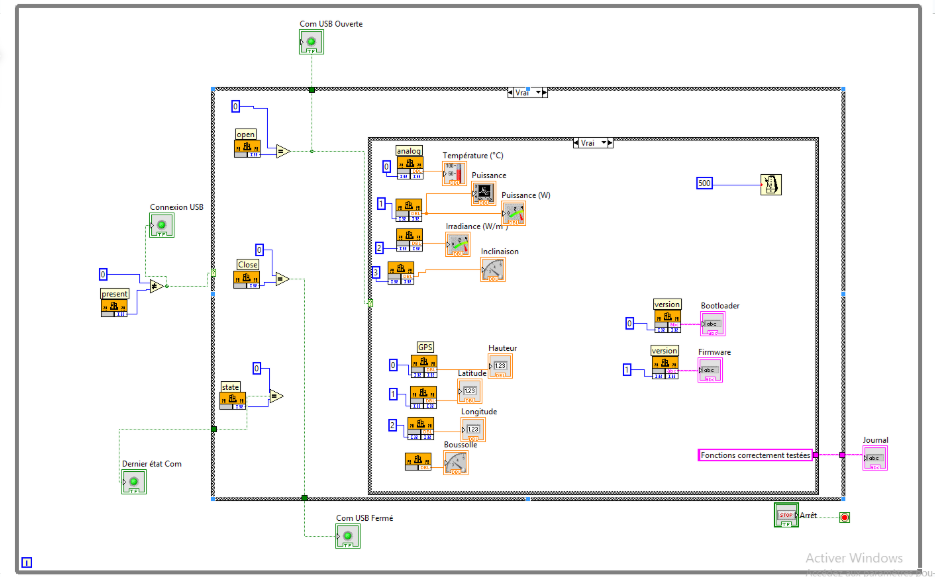

Ce projet vise à développer un Analyseur de Gisement Solaire (AGS), un outil destiné à aider les installateurs à évaluer la production et la rentabilité d'une installation photovoltaïque. Ma contribution s'est concentrée sur la chaîne de traitement numérique du signal : de l'acquisition sur le microcontrôleur (PICkit) à la visualisation des résultats sur l'IHM LabVIEW.
Contexte et Objectifs
L'objectif principal de l'AGS est de mesurer en temps réel les grandeurs physiques liées au potentiel solaire d'un emplacement. Ce système permet d'appliquer concrètement des connaissances en électronique, énergie, programmation et outils d'acquisition.
Objectifs Techniques :
- Mesurer en temps réel les grandeurs physiques : Puissance, Température, Inclinaison, Radiation, Orientation, et Position GPS.
- Traiter et superviser ces données sur ordinateur via une IHM développée sous LabVIEW.
- Programmer le microcontrôleur pour piloter l’ensemble des fonctionnalités de l’AGS.
Interface Homme-Machine (IHM) et Supervision LabVIEW
J'ai entièrement réalisé l'application sous LabVIEW qui sert d'interface de supervision. Cette IHM permet la visualisation claire du comportement du panneau solaire en fonction des paramètres mesurés.
Développement de l'IHM
- Acquisition des Capteurs : Lecture et monitoring en temps réel des mesures (tension, courant, température).
- Communication USB : Mise en place de la liaison PC ↔ microcontrôleur via une DLL USB pour le transfert des données.
- Visualisation : Affichage de la version du logiciel embarqué et visualisation des variations de tension et de température via des graphes dynamiques.
- Supervision des Modules : Lecture des données GPS et de la boussole.
Détails Visuels (Interface et Code)
Face Avant (Interface Utilisateur)
Affichage des indicateurs de contrôle et des données GPS/Mesures en temps réel.
Visualisation des données lors d'un cycle de test, affichant la courbe de puissance en fonction du temps.
Programmation Embarquée et Acquisition
J'ai programmé le microcontrôleur pour gérer les acquisitions analogiques et les temporisations essentielles au système, en utilisant l'environnement MPLAB. Le microcontrôleur utilisé sur la carte était un modèle de substitution (non spécifié) à celui demandé dans la documentation, nécessitant un ajustement des registres pour la programmation.
Gestion des Temporisations en C
La gestion temporelle précise des cycles d'acquisition, cruciale pour l'AGS, a été réalisée via la programmation des **Timers** du microcontrôleur. Le programme ci-dessous illustre la fonction de temporisation basée sur le Timer0.
void TimStart(unsigned int Duree)
{
// Calcul de la valeur de préchargement pour le Timer0 (TMR0)
unsigned long ticks = ((unsigned long)Duree * (16000000UL / 1000UL)) / (4UL * 256);
int preload = 65536 - ticks;
// Chargement de la valeur calculée dans TMR0
TMR0H = (preload >> 8) & 0xFF;
TMR0L = preload & 0xFF;
// Clear flag et démarrage du Timer
INTCONbits.TMR0IF = 0;
T0CONbits.TMR0ON = 1;
// Attente du débordement (période de temps écoulée)
while (!INTCONbits.TMR0IF);
// Arrêt et réinitialisation
T0CONbits.TMR0ON = 0;
INTCONbits.TMR0IF = 0;
}
Extrait de code C illustrant la mise en œuvre de la fonction de temporisation basée sur le Timer0.
Diagramme LabVIEW (Code Logiciel)
Structure du programme LabVIEW montrant la logique d'acquisition, de gestion des communications USB et du traitement des données.
Compétences et Bilan Personnel
Ce projet a été formateur et a nécessité une forte autonomie face aux défis rencontrés (matériel non standard, prise en main de LabVIEW sans guidage).
Compétences Développées sur ce Projet
| Compétence | Détail de la compétence | Niveau d’acquisition |
|---|---|---|
| Programmation LabVIEW | Développement d'une application complexe (IHM) en langage G, gestion des structures, interface utilisateur. | |
| Autonomie et Apprentissage | Prise en main d'un nouvel environnement (LabVIEW) avec peu de guidage, recherche de solutions par l'expérimentation. | |
| Intégration et Test Matériel/Logiciel | Validation du fonctionnement de l'IHM avec le matériel réel, diagnostic des pannes et incohérences. |
🤝 Soft Skills (Compétences Comportementales)
| Compétence | Mise en application |
|---|---|
| Autonomie | Apprentissage autodidacte de LabVIEW et recherche active de documentation technique. |
| Résolution de Problèmes | Diagnostic des pannes matérielles aléatoires sur les boîtiers AGS et adaptation logicielle. |
| Communication Technique | Échange de modules fonctionnels et d'astuces avec les autres groupes pour avancer collectivement. |